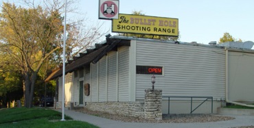

A Gruesome Find
On patrol of the unincorporated area between Kansas City and Independence, Missouri at 3:44 a.m. on October 23, 1997, Dep. David Epperson turned his cruiser in to the darkness of Lincoln Cemetery. The narrow drive dividing the small plot of land had brought the deputy less than a quarter mile when his headlights lit on the body of a white female lying in the grass.
Dep. Epperson got out to check on her and discovered what his later report described as "severe head trauma": a large wound at the center of the woman's face. Her skin bluish gray and cool to the touch, her wide-open eyes fixed on some faraway point in the sky, she was dead.
Lincoln Cemetery sits in Blue Summit, Missouri, an area with no police presence but under jurisdiction of the Jackson County Sheriff's Department
Dep. Epperson radioed it in. Fellow officers from the Jackson County Sherff's Department descended on the scene with police tape, cameras, and metal detectors. Their thorough search turned up no clues — no weapon, no bullet casings, no recent tire tracks, no prints, no foreign tissues or fluid, no hair or fibers, nothing that seemed out of place.
When Boyd Harlan, an investigator for the Medical Examiner, arrived at 5:05 a.m., he recorded his observations of the scene. The young woman's wound was from a gunshot fired while the gun touched her face. A piece of her skull lay in the grass near her head. Her eyes were clear. Her muscles had just started stiffening in rigor mortis. She was fully dressed. And even though she showed no signs of struggle, the missing firearm led him to call this a homicide. He decided she must've been standing when shot, then left lying where she fell. The few bills in her jeans pocket (besides a single key, all her pockets contained) led him to surmise this wasn't an attempted robbery.
Photos were taken at the scene, then she was wrapped in a tarp, and transported to the Medical Examiner's offices.
The autopsy began at 9:30 a.m. that same day. A distorted bullet fragment was tangled in the young woman's hair near the exit wound. This was sent to the lab, which weighed it (56.1 grains) but did no tests. An x-ray of her skull revealed a "lead snowstorm" along the bullet's path — pieces of a single projectile that spun to bits and became trapped inside her skull. There was no bullet jacketing or wadding.
The Jackson County Medical Examiner's Office, in downtown Kansas City, Missouri, is less than a 15-minute drive from Blue Summit
These are the anatomical facts: her eyes remained had yet to fully set in. When she was undressed, her underwear contained a fresh sanitary pad. There were no cuts, bruises, or abrasions of note.clear, her skin hadn't gone completely pale, and rigor mortis
According to the death cetificate, her death took place sometime that day.
Meanwhile, officers at Lincoln Cemetery had a lead on her identity. A man had met the manager of Mt. Washington Cemetery at dawn, by the south gate, saying he was looking for his teenage daughter who had not come home the night before. Glen Colliver, the cemetery manager, recognized the photo he was shown: it was the young woman he'd seen at 5:00 p.m., seated on the steps of the William Rockhill Nelson Family Memorial, a large Gothic-style tomb, and then again at 7:05 p.m., during his final drive through the grounds before locking up. That second time, she'd been with two boys and another girl, just stepping out of a blue-green Honda parked in front of the Nelson Memorial. He flashed his headlights for them to leave, and they did. The worried father had given his phone number to Mr. Colliver, and Mr. Colliver turned this over to an officer at the scene.
Several times larger than Lincoln Cemetery is Mt. Washington, which abuts it to the east.
Calls were placed. Records were retrieved. Before noon, dental x-rays identified the young woman as Anastasia WitbolsFeugen, a recent University of Missouri–Kansas City freshman last seen by her family the day before, when her stepmother gave her a ride to meet her on-and-off boyfriend, Justin Bruton, at Mt. Washington.
Case Number 97-11829
The investigation into Anastasia WitbolsFeugen's unexplained death fell to Sgt. Gary Kilgore of the Jackson County Sheriff's Department (JCSD). Especially in its earliest hours, Sgt. Ron Kellogg assisted him.
The sergeants conducted several interviews right away, which established that Anastasia spent the late-afternoon of October 22, 1997, waiting for Justin Bruton. She had told her stepmother that Justin planned to pick her up from Mt. Washington to discuss their turbulent relationship. Instead of coming to her, though, Justin went shopping for video games in Kansas with their mutual friend Byron Case.
Byron's girlfriend, Kelly Moffett, lived near the game store. The boys picked her up while they were in the area. Before going to play video games at Justin's condominum, the trio stopped at a Kicks66 gas station, where Justin used a pay phone to let Anastasia know he wouldn't be coming to get her — except Francesca WitbolsFeugen, Anastasia's sister, answered. Anastasia had already left for the cemetery.
Anastasia WitbolsFeugen was a resident of Independence, and lived just up the road from the cemeteries
Waiting for Justin eventually wore down Anastasia's patience. She wandered out Mt. Washington's north gate, across U.S. Highway 24, to a Dairy Queen where she used the pay phone. It wasn't her family she called, though, it was Justin — repeatedly. An employee at the Dairy Queen talked with her between attempted phone calls. Anastasia complained about being stood up, and after a while asked the woman for a sanitary pad. The employee got her a tampon instead, which Anastasia used in the restroom.
The couple finally connected when Justin got home with Kelly and Byron. Anastasia wasn't happy with him at all, and she hounded Justin until he agreed to drive from midtown Kansas City to the Dairy Queen (DQ) in Independence, even if their friends had to come along for the ride. She'd waited for hours, first at the cemetery, now at the restaurant, and was determined to follow through with their plan.
It was twilight by the time Justin's car pulled into the Dairy Queen lot. Anastasia's temper flared. She and Justin bickered outside for a moment, then she took the front passenger seat, and Justin drove them all across to Mt. Washington, where Kelly and Byron were to go for a walk while the other couple had their privacy. They parked at the steps of the Nelson Memorial and were just getting out when the cemetery manager pulled up behind them and flashed his headlights. They knew what this meant, so they piled back into the little Honda and exited by the same gate they'd come in.
On the steps of the William Rockhill Nelson Family Memorial was where Anastasia was seen several times, waiting on Justin
Justin surrendered to taking them all back to his condo, but they hadn't driven far when they stopped at the traffic light under the I-435 overpass. Anastasia asked Justin why he didn't love her anymore.
"I don't know," he answered. "I just don't."
Just like that, she opened the passenger door, stepped into the road, and, slamming the door behind her, stormed eastward, past an Amoco service station and several other Truman Rd. businesses they'd just traveled past.
The traffic light changed to green. Justin accelerated toward Kansas City, leaving Anastasia behind.
After playing Nintendo at the condo and stopping in on their friend Abraham Kneisley, Justin, Byron, and Kelly drove back to Kansas in time for Kelly's 9:00 p.m. curfew. Justin used Kelly's phone to see if Anastasia made it home yet. Again, it was Francesca he talked with.
"You mean she's been out there for two hours?" Francesca shouted when Justin told her what happened at the stoplight. He seemed unconcerned.
The boys returned to Kansas City and ran an errand to their friend Tara McDowell's apartment. Then, a few minutes after 10:00 p.m., Justin dropped Byron off at Byron's mother's place.
Anastasia's father, Robert WitbolsFeugen, came home at 9:30 or 10:00 p.m. He was unsettled by news that his oldest daughter was still out, by herself. He set out on an exhaustive search up and down Truman Rd., making stops wherever he suspected Anastasia might have walked, given her mental state: her high-school friend's house, brightly lit gas stations, and Mt. Washington Cemetery.
Anastasia had recently been very depressed and had a history of suicidal thoughts. A few weeks earlier she'd cut her wrists with razor blades. She'd been talking about death and dying, and even spent a day that week with Justin, looking at Kansas City cemeteries together. She'd celebrated her birthday, that summer, in a cemetery after dark.
Robert had dismissed these things as garden-variety teenage angst, but an ominous feeling came over him that night. He was parked outside the locked Truman Rd. gate of Mt. Washington Cemetery at around 11:30 p.m., wondering where he might search next when a gunshot echoed through the neighborhood.
"At that time," he told Sgt. Kilgore during their first in-depth interview, "I knew my daughter was dead."
Because Justin was nowhere to be found, following interviews with Anastasia's family, Sgt. Kilgore issued a stop order for Justin's car, declaring him a "person of interest" to the investigation. Sgt. Kilgore asked Kelly and Byron to come to JCSD headquarters for interviews. They did, on October 24, and their separate accounts of October 22 matched everything already known.
That same day, an officer carrying photos of Anastasia and Justin to local businesses located Don Rand, a mechanic who worked nights at the Truman Rd. Amoco by the I-435 overpass. Mr. Rand pointed to Anastasia's photo and said she was the attractive young woman he noticed getting out of a dark-colored car at the traffic light, two nights before. He reported watching her speed-walk up Truman Rd. until she disappeared around the bend a short distance east.
From the Amoco, about 100 feet away from the traffic light, Don Rand watched Anastasia get out of Justin's car and walk quickly east
Suicidal Tendencies
Anastasia was wrestling with significant depression at least as early as Christmas of 1996, when she was still a student at Lincoln College Preparatory Academy. She talked about suicide often but recognized she needed help. Her parents wouldn't let her try a prescription antidepressant.
When she met Justin, things seemed to get better for a while. Her mother described Anastasia's feelings as seeming to be "really tied up in Justin," but whether this was for good or bad depended a lot on Justin's mood.
Justin had been diagnosed with major depression. He had a history of suicide attempts and was prescribed medication for his mental health issues. Around September or October of 1997, he stopped taking his Prozac and started using large quantities of illegal drugs, especially hallucinogens like LSD and mescaline. In the weeks leading up to Anastasia's death, he even experienced several days when too much acid made him believe tiny people were living in fish tanks underneath the floor of his condo. He took a keen interest in making pipe bombs and other explosives, and, for reasons only he knew, spent several weeks looking to illegally buy a handgun. He did buy a shotgun at a local Walmart, on September 27th. No longer working at his job at Blockbuster Video, he also gave up on attending his classes at UMKC.
Anastasia's worsening depression mirrored Justin's. She asked for her parents' help in getting sleeping pills, and her casual remarks about death and suicide increased. She also stopped attending classes, and her father, Robert, noticed her putting her photos and personal effects in order. He gave her a mental-health hotline number to call, but she never followed up with it.
His family was wealthy, but Justin often complained about the excessive control they had over his life
The day before Justin drove to visit his parents in Tulsa, Oklahoma, was October 16. Anastasia said he was acting fine then, but was cold to her when he returned. His father later said that Justin had taken his car to be serviced and attended a gun show while in Tulsa. When John Bruton asked his son about the gun show, Justin told him he hadn't bought or traded any firearms there.
Anastasia called her mother on Monday, October 20, to talk about how Justin was suddenly treating her. She called again on Tuesday, then on Wednesday. Each day, the conversation between Betsy Owens and her daughter lasted a long time, which Betsy called unusual.
"She was a little depressed," Betsy told Sgt. Kilgore during one interview, "not wanting to live, that type of thing."
Justin called Byron at roughly 9:00 on the morning of October 23. He told his friend he'd had trouble sleeping. It was strange for Justin to be awake before noon, but that morning he wanted to meet Byron for breakfast, for some reason. Byron was a late sleeper too, so he told Justin to call him later in the day.
Instead, within the next couple of hours, Justin was the first customer of the day at the Bullet Hole, a Kansas gun store, where he bought a Remington 870 shotgun and a box of 12-gauge rifled slugs. He wasn't seen again for two days.
A two-man patrol unit for the Johnson County, Kansas, Sheriff's Department found Justin's body behind an abandoned building in rural DeSoto. He was lying with his back to the wall, one ankle crossed over the other, with the Remington at his side and massive trauma to his head. A search of his wallet and nearby car provided his identity. The ground underneath his vehicle was dry, despite recent rain, which meant Justin had shot himself in the head not long after his 9:00 a.m. call to Byron.

Gun-store clerk Jim Dodd told authorities that Justin hadn't acted strangely or like anything but another typical customer
Sgt. Kilgore took custody of Anastasia and Justin's personal computers. On Justin's he found a text file created scarcely more than one day before Anastasia's death. The fact that it's addressed to Justin and bears her style leaves little doubt she typed the document for him to find. In part, it read, "I wish I could kill myself. I wanted to do it before but I couldn't because I firmly believe that you would come back to me."
Payback
Within a year of their friends' deaths, Kelly and Byron's relationship had turned as dysfunctional as Anastasia and Justin's had been, Kelly's alcohol and drug abuse worsened; Byron dealt just as poorly, but in different ways, with his own grief. They broke up for good in the middle of January 1999.
Kelly still contacted Byron by phone or, sometimes, showed up unannounced at his home or workplace. She'd quit school and went missing for days at a stretch, high on crack cocaine. Her parents soon kicked her out entirely, fed up with her stealing, lying, and manipulation. She approached Byron, one of the last people she said still cared, whenever she wanted money, a safe place to get a few hours of sleep, or the use of a shower.
Not long before the Moffetts evicted her, Kelly and Byron had an argument on the phone. He didn't approve of her substance abuse and told her he wouldn't enable it anymore. Then he hung up on her. She called back but he wouldn't pick up, so she called 911. Kelly told the dispatcher that her ex-boyfriend was "crying and kind of hysterical," threatening to kill himself over their breakup. Police responded to Byron's apartment and took him for emergency psychiatric evaluation at Western Missouri Mental Health Center. By law, he had to be kept for 23-hour observation, even though the Center staff reported him as cooperative, calm, and showing no signs of being suicidal.
Byron knew that Kelly drank and used hard drugs before they ever met, but he learned keeping her away from them was impossible
Actively avoiding Kelly after his release was hard. She kept popping up, acting like her false report to the police never happened. She'd become a dangerous and destructive force in Byron's life, and he knew he did not want her in his life any longer.
Missouri v. Byron Case
In September of 2000, Byron had a female friend over for company when Kelly appeared. He allowed Kelly into his apartment but told her he was moving to St. Louis with his friend, partly to get away from these recurring intrusions. He refused to give Kelly his new contact information, and she left, upset.
Less than six days after he left Kansas City, Kelly was in the Jackson Country Prosecutors Office, telling a story under complete immunity from prosecution, about having been present when Anastasia WitbolsFeugen was shot... by Byron.
According to Kelly's story, Justin and Byron spent the afternoon of October 22, 1997, drinking Jack Daniels and plotting to murder Anastasia, "the biggest problem" in Justin's life. Asked what the motive for this killing might have been, Kelly said Byron listened to dark music, acted strangely, and "always wanted to kill someone anyway." Committing the murder would be a friendly favor.
Kelly claimed the reason she was there that evening was because the boys needed her to lure Anastasia to a meeting at the Dairy Queen. This phone call, she said, was the reason they stopped at the Kicks66 gas station. Once they picked up Anastasia, they drove to Lincoln Cemetery, where the other couple argued just beside the car while Byron got out, openend the trunk, lifted an old double-barreled shotgun, and shot Anastasia in the head. Then they sped away to an industrial area very close by, where Byron threw the gun off the side of the road, near some train tracks.
The investigation stayed open for nine more months. Authorities didn't try to arrest Byron or charge him with anything during that time. The Procecutors Office instead ordered Sgt. Kilgore to install a recording device on the Moffetts' phone so that Kelly could get an admission of guilt from Byron on tape. They gave her Byron's new phone number, and then they waited.
His roommate answered a lot of calls from Kelly, always telling her that Byron didn't live there anymore. Kelly finally connected with him in the spring of 2001. He was back in Kansas City, staying with his mother. Near midnight on June 5, he was sleeping, sick with a high fever caused by a throat infection, when the phone rang. As soon as he heard Kelly's voice, Byron hung up. Kelly called back, though, and they had a conversation.
Claiming that she was being harassed every day by investigators and getting emails from Anastasia's "disturbing father," Kelly said she was concerned about talking with the police again.
"I don't know what to do, and that's why I called you," she said. "Because you do realize that I've been drug addicted for some time. My memory's not that good, and they're harassing me about information now, and I don't know what to do about it."
After a short detour where Byron marveled at Kelly being back in her parents' home, he advised her to be straightforward: "Just say you don't remember." He was confused about why the Sheriff's Department would have any reason to contact her and said, "I'm really surprised that they called again."
This prompted a rapid-fire speech by Kelly, complaining about the toll her addictions had taken and, again, authorities' ongoing effort to re-interview her. In the middle of this rant, Kelly asked why Byron "felt the need to kill" Anastasia. He seems to go silent for several moments before saying, "We shouldn't talk about this."
Prosecutors listened to the tape-recorded conversation, then wanted Kelly to call Byron again, this time in the presence of detectives from the Jackson County Drug Task Force — a "controlled contact" — to get them the admission she had promised. She called, under police supervision, on June 7, two days later. No mention of Anastasia or of October 22, 1997, was made during that call, and Byron didn't understand why Kelly was insistent on meeting up with him somewhere, but he agreed to let her call the next day, to schedule a get-together.
Prosecutors had the Drug Task Force detectives meet Kelly once more, on June 8, for a second controlled contact with Byron. She tried to reach him four times that day, but he never answered the phone. The authorities gave up on trying to get an admission and moved forward with what they had.
In his Probable Cause Statement, Sgt. Kilgore wrote, "Ms. Moffett witnessed Byron Case shoot Ms. WitbolsFeugen in the face with a long barreled firearm." A warrant was issued and a complaint filed, charging Byron with murder in the first degree and armed criminal action. He was arrested from his mother's home in Kansas City, Missouri, on June 11, 2001.
The trial began on April 29, 2002. Kelly testified to her new version of the events of October 22, 1997. The prosecutor's other witnesses included Dep. Epperson, Kelly's mother, Anastasia's stepmother and sister, the Mt. Washington Cemetery manager, Justin's father, the clerk who sold Justin the gun he used to kill himself, a detective from the team that arrested Byron, an assistant to the Jackson County Medical Examiner, and the Kansas deputy who found Justin's body.
So many family members and friends came to show their support of Byron, his lawyer said he'd never had another client so visibly cared about
When the defense's turn came, Byron's court-appointed lawyer called the DQ employee who gave Anastasia a tampon, Byron's St. Louis roommate, Byron's mother and aunt, an investigator who recorded the driving distances to locations in Kelly's story, two friends who saw the trio after Anastasia got out of Justin's car, the Amoco mechanic who saw Anastasia walking up Truman Rd., an independent pathologist, and Byron himself.
The jury went into deliberation on May 2, following four days of testimony. They requested crime scene photos (which they got), recordings of the June 5 and 7 phone calls (which they were allowed to listen to once again), and transcripts of Kelly Moffett and Francesca WitbolsFeugen's trial testimonies (which they were denied). They returned shortly after lunch, with verdicts of "guilty on both charges."
Not quite two months later, on June 28, 2002, Byron was sentenced to life without parole.
![[Browser Nor Supported]](images/case-byron-02-05-02.jpg) He'd been allowed to wear a suit for trial; there was no such nicety at Byron's sentencing hearing
He'd been allowed to wear a suit for trial; there was no such nicety at Byron's sentencing hearing
A Cause Worth Fighting For
In one appeal after another, local, state, and federal courts declined to overturn Byron's conviction. The last of these was in 2010, when the U.S. Supreme Court refused to hear his case. He has no more procedural options left to pursue.
All through the many years that have passed since Anastasia WitbolsFeugen's untimely death, Byron's version of October 22, 1997, has remained the same. He's maintained his innocence from the beginning. Prosecutors never produced a murder weapon and couldn't link the bullet fragment from Anastasia's hair with any firearm resembling the one in Kelly's story. The only so-called evidence presented — Kelly's recording of her June 5, 2001, phone call to Byron — makes their case circumstantial at best.
We, Byron's supporters, believe in his innocence not only because it's against Byron's character to have committed such a heinous crime, but because Kelly's story doesn't stand up to the slightest scrutiny. We believe Byron is innocent because of the evidence, which shows that:
- Anastasia stormed away from Justin's car at I-435 and Truman Rd.
- None of her family was there when Anastasia got home, changed clothes, swapped a pad for the tampon given her at Dairy Queen, and left before anyone returned to the house.
- Kelly and Byron were at their homes, miles away from Lincoln Cemetery, by no later than 10:00 p.m., and were there until the next morning.
- Anastasia almost certainly died around midnight.
- Justin's whereabouts are unaccounted for between 10:00p.m. on October 22 and 9:30 a.m. on October 23.
- Justin bought the gun he used to end his life hours before Anastasia's body was identified.
- Kelly and Byron's accounts matched one another and fit with every other third-party witness's description of October 22, 1997, and only changed after Kelly was rejected by Byron, the last person who still took pity on her, three years later.
- Keeping their plan secret from even their close friends, Anastasia and Justin, like a modern-day Romeo and Juliet, arranged and carried out their deaths.
More and more people learn about Byron's case every day and see it for the manifest injustice it is. The fact that authors, journalists, bloggers, podcasters, TV producers, talk-radio personalities, and the public are drawing attention to this travesty fans our hope. Changing Byron's fate is going to take all the support we can muster. And we can change it.
The governor can set Byron free with a stroke of his pen. The Prosecutors Office can take steps to correct its past misconduct. A federal court can acknowledge Byron's actual innocence in a habeas corpus proceeding.
Each avenue to freeing Byron Case will take huge amounts of effort and resolve on our part, but we can make it happen... if we take action today!